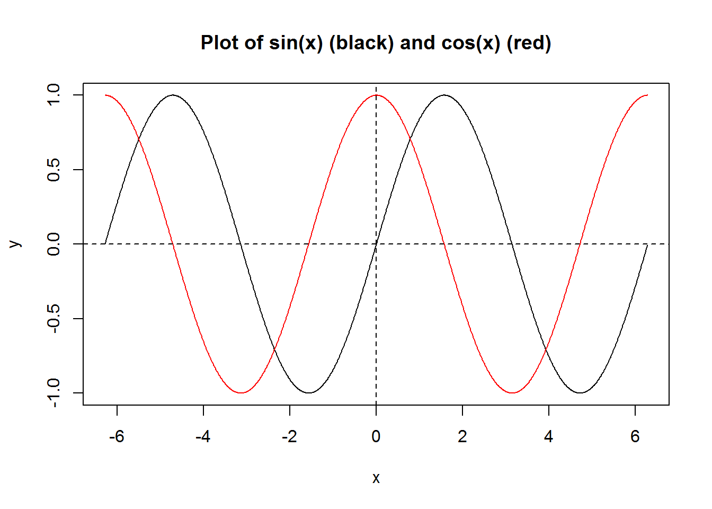

2 Lesson 2 Toy Examples
There are three toy examples; go through them one by one. Firstly, think about how to solve the problem by yourself; and then study the example R code.
Example 1: Write an R program to plot \(f(x)=\sin(x)\) (black color) and \(g(x)=\cos(x)\) (red color) together; \(x\) takes values from \(-2\pi\) to \(2\pi\).
x <- seq(-2*pi, 2*pi, by = 0.01)
y_1 <- sin(x)
y_2 <- cos(x)
plot(x, y_1, type = 'l', col = 'black', xlab = 'x', ylab = 'y',
main = "Plot of sin(x) (black) and cos(x) (red)")
points(x, y_2, type = 'l', col = 'red')
abline(h = 0, lty = 2)
abline(v = 0, lty = 2)
Example 2: Check all integers from 1 to 100: if an integer is multiple of 5, then output “F”; if the integer is multiple of 7, then output “S”; if it’s multiple of both 5 and 7, then output “FS”; otherwise just output the integer.
nbr <- 1:100
output <- rep("", times = 100)
for(i in nbr) {
s <- ""
if(i %% 5 == 0) s <- "F"
if(i %% 7 == 0) s <- paste0(s, "S")
if(s != "") {output[i] <- s
} else {output[i] <- i}
}
print(output)## [1] "1" "2" "3" "4" "F" "6" "S" "8" "9" "F" "11" "12" "13" "S" "F"
## [16] "16" "17" "18" "19" "F" "S" "22" "23" "24" "F" "26" "27" "S" "29" "F"
## [31] "31" "32" "33" "34" "FS" "36" "37" "38" "39" "F" "41" "S" "43" "44" "F"
## [46] "46" "47" "48" "S" "F" "51" "52" "53" "54" "F" "S" "57" "58" "59" "F"
## [61] "61" "62" "S" "64" "F" "66" "67" "68" "69" "FS" "71" "72" "73" "74" "F"
## [76] "76" "S" "78" "79" "F" "81" "82" "83" "S" "F" "86" "87" "88" "89" "F"
## [91] "S" "92" "93" "94" "F" "96" "97" "S" "99" "F"Example 3: Write an R function to calculate how old you are in days.
library(lubridate) # to use function days()
how_old_in_days <- function(`birth_day_yyyy-mm-dd`)
{today <- Sys.Date()
life_in_days <- days(today - as.Date(`birth_day_yyyy-mm-dd`))
print(life_in_days)
}
how_old_in_days("2005-12-04") # today is "2022-12-25"## [1] "6233d 0H 0M 0S"